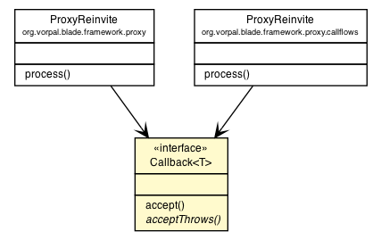

|
||||||||||
| PREV CLASS NEXT CLASS | FRAMES NO FRAMES | |||||||||
| SUMMARY: NESTED | FIELD | CONSTR | METHOD | DETAIL: FIELD | CONSTR | METHOD | |||||||||

@FunctionalInterface public interface Callback<T>
| Method Summary | |
|---|---|
void |
accept(T elem)
|
abstract void |
acceptThrows(T t)
|
| Methods inherited from interface java.util.function.Consumer |
|---|
andThen |
| Method Detail |
|---|
void accept(T elem)
accept in interface Consumer<T>
void acceptThrows(T t)
throws Exception
Exception
|
||||||||||
| PREV CLASS NEXT CLASS | FRAMES NO FRAMES | |||||||||
| SUMMARY: NESTED | FIELD | CONSTR | METHOD | DETAIL: FIELD | CONSTR | METHOD | |||||||||